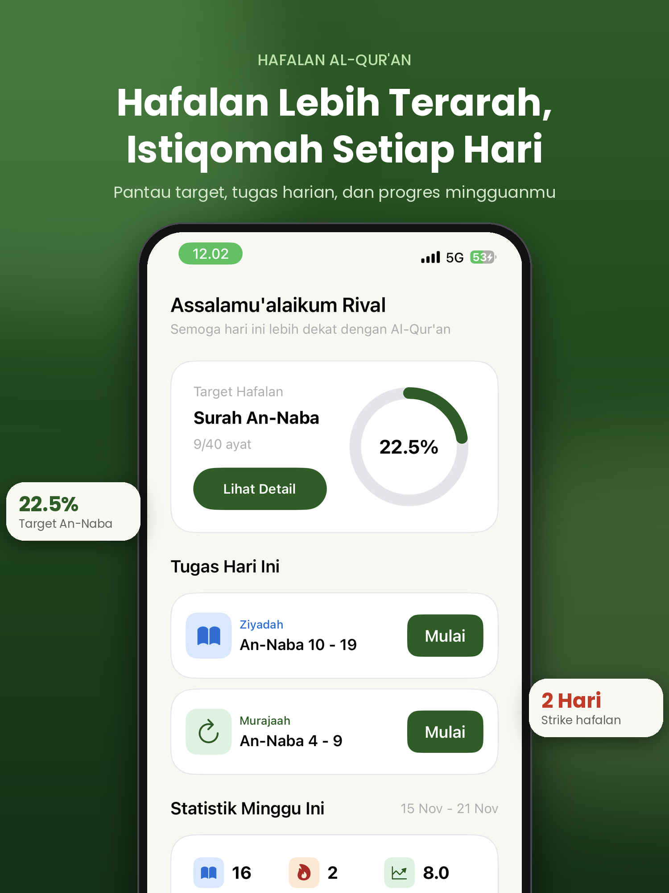
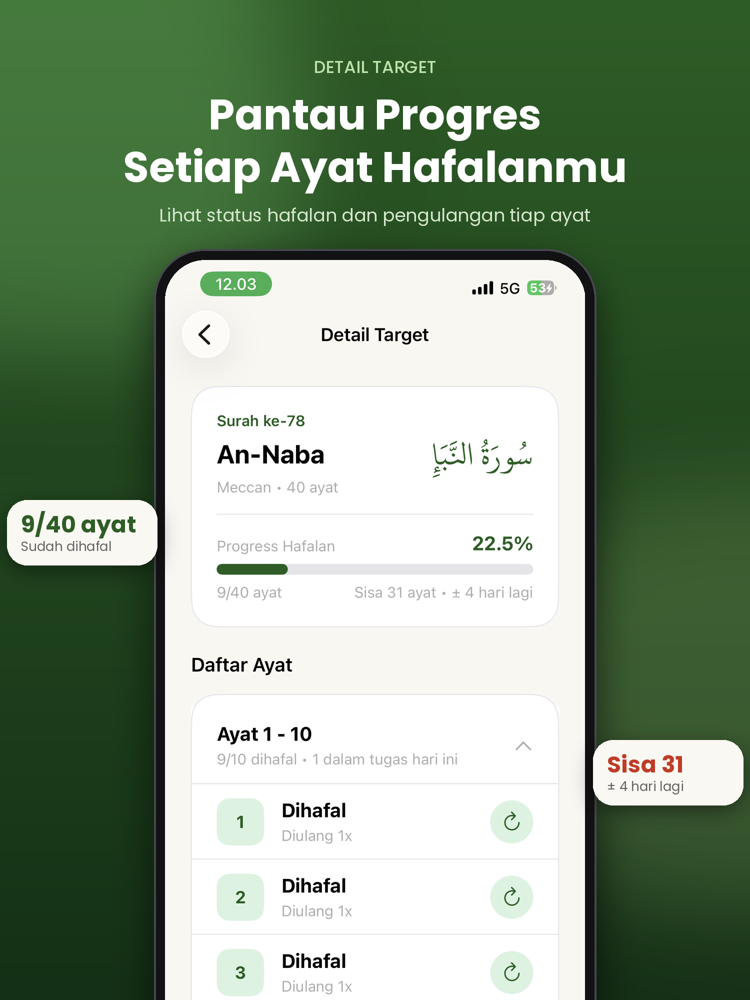
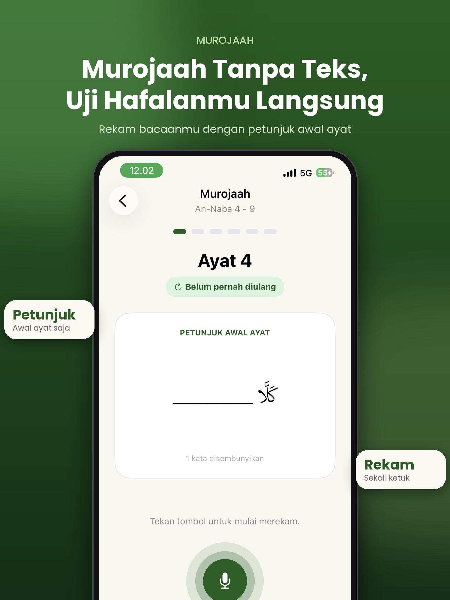

Kuttaib
Aplikasi pendamping menghafal Al-Qur'an, dari fase ziyadah dan murojaah sampai setoran hafalan bersama ustadz.
- Masalah
- Banyak orang ingin menghafal Al-Qur'an tetapi tidak tahu metode yang tepat. Kuttaib memandu prosesnya lewat tiga fase: ziyadah (menambah hafalan), murojaah (mengulang), dan setoran hafalan bersama ustadz.
- Peran
- Merancang dan membangun aplikasi dari awal sampai akhir (saat ini baru iOS), dengan Supabase sebagai backend. Sebagai bagian dari tim teknologi, saya bertanggung jawab atas seluruh komponen pengembangan teknologi dan ikut meriset fitur yang tepat bersama tim.
- Tantangan
- Membangun sistem pembuat tugas harian yang kompleks, karena harus menyesuaikan preferensi tiap pengguna dan menerjemahkan metode belajar dari ustadz ke dalam logika aplikasi.
- Hasil
- Sempat rilis di App Store dan kini ditarik sementara untuk menyempurnakan MVP. Ide bisnisnya membawa saya ke Apple Developer Catalyst Program 2024 dan mendapat pendanaan awal.